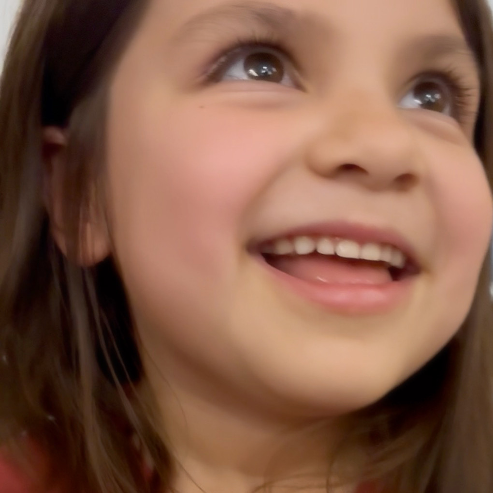
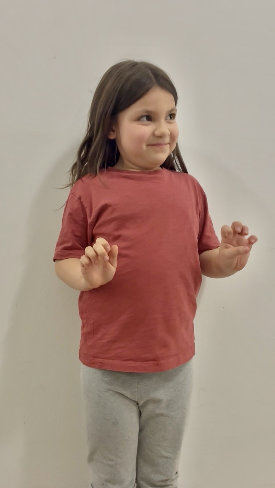

Film / Music Video
Caskets — Chris Webby
Young Girl | Dir. Donn “Q” Quijada | 2026
New York City
A joyful and expressive young performer with strong focus, clear diction, and a natural on-camera presence.

Missy Golden is a New York City-based child actor, singer, and performer. She brings stories to life through singing, acting, and expressive character work. She is non-union, multiracial / ethnically ambiguous, and available for film, commercial, music video, print, and theatrical opportunities.
Caskets — Chris Webby
Young Girl | Dir. Donn “Q” Quijada | 2026
Untitled Music Video — Perry Maysun
Featured Background / Grandchild | 2026
Met 81st Street Studios
Extra | Production Company: Bluecadet | 2023


For casting, representation, and professional inquiries: